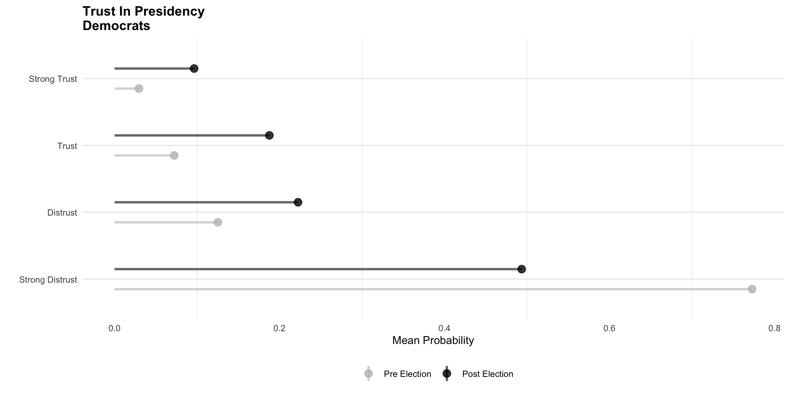
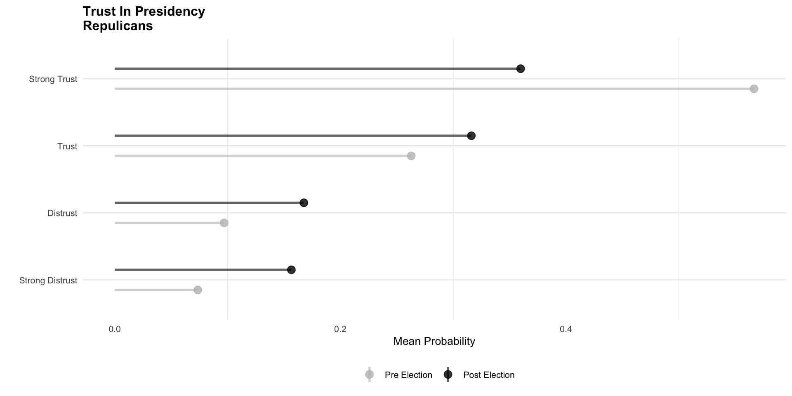
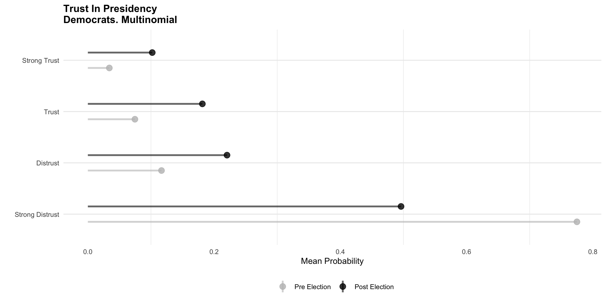

The Multinomial Model
2026-08-18
\[ \begin{eqnarray*} P(y=1) & = & F(\tau_1 - \mathbf{X}\boldsymbol{\beta}) \quad \text{where } \tau_0 = -\infty \\ P(y=2) & = & F(\tau_2 - \mathbf{X}\boldsymbol{\beta}) - F(\tau_1 - \mathbf{X}\boldsymbol{\beta}) \\ P(y=3) & = & F(\tau_3 - \mathbf{X}\boldsymbol{\beta}) - F(\tau_2 - \mathbf{X}\boldsymbol{\beta}) \\ P(y=4) & = & 1 - F(\tau_3 - \mathbf{X}\boldsymbol{\beta}) \quad \text{where } \tau_4 = \infty \end{eqnarray*} \]
The model consists of a structural model and a measurement model
The structural model is similar to the binary logit/probit model, in which we assume there is a latent continuous variable that underlies the observed ordinal variable.
\[y_{latent}=\beta_0 + \beta_1x_i +...\sum^{J}_{j =1} \beta_j x_{ij}+e_i\]
\[y=X\beta+e\]
Instead of the variable being 0/1, it is not more than two categories that are ordered. Assume we knew \(y_{latent}\) and would like to map that to observing a particular category.
Using the same logic from the binary regression model, assume that we observe the category based on the orientation to a series of cutpoints, where
\[y_i=m: \tau_{k-1}\leq y_{latent} < \tau_{k}\]
MASS::polr() these are zetaTo what extent do you agree or disagree with the following statement: Government should provide universal health care, which you predict with ideology, measured from 0 (Strong Liberal) to 1 (Strong Conservative). If ideology has a different effect from moving from Strongly Agree to Agree than from Agree to Disagree, then the parallel lines assumption is violated.Policy Attitudes/Ideology. Assume the following item: To what extent do you agree or disagree with the following statement: Government should provide universal health care, which you predict with ideology, measured from 0 (Strong Liberal) to 1 (Strong Conservative). If ideology has a different effect from moving from Strongly Agree to Agree than from Agree to Disagree, then the parallel lines assumption is violated.
Grades and Study Time. Assume you are predicting letter grades (A, B, C, D, F) with study time. Since study time is only part of what determines a grade – also reading the textbook, attending lectures, working through examples – it might be enough to move a student from an F to a D. However, moving from a B to an A might require more than just study time – it might require the aformetioned factors, along with ability, prior knowledge, or access to tutoring. The proportional lines assumption is violated.
Other Examples
Other Models. The parallel lines assumption can be tested by comparing the likelihood of the ordered logit/probit model to a different model, a model in which the independent variables have different effects in predicting category membership. This is called a multinomial model. When using the logit distribution, this is called a multinomial logit; when using the normal distribution, it is called a multinomial probit.
\[pr(y_{obs} = \space \space \begin{array}{lr} C_1, pr(y=1|x_i)\\ C_2, pr(y=2|x_i)\\ C_3, pr(y=3|x_i)\\ ...\\ C_k, pr(y=K|x_i)\\ \end{array} \]
Assume we have \(k\) categories, and each subject \(i\) falls into one of these categories. This means there are \(k\) probabilities for each subject.
The joint probability of observing counts \(y_1, y_2,....y_k\) in each category, given \(n\) trials and probabilities \(p_1, p_2,...p_k\) is provided by the multinomial distribution:
\[ pr(y_1, y_2.....y_k| n, p_1, p_2....p_k)={{n!}\over{y_1!y_2!...y_k!}}p_1^{y_1}p_2^{y_2}...p_k^{y_k} \] - Put another way, for a given row (subject) in our data.
\[ pr(y_1, y_2.....y_k| n, p_1, p_2....p_k)={{n!}\over{\prod_{i} y_i!}} \prod_{i=1}^K p_i^{y_i} \]
\[ln({{pr(D|x)}\over{pr(R|x})}=\beta_{0,D|R}+\beta_{1,D|R} \cdot x\]
\[ln({{pr(D|x)}\over{pr(I|x})}=\beta_{0,D|I}+\beta_{1,D|I} \cdot x\] \[ln({{pr(R|x)}\over{pr(I|x})}=\beta_{0,R|I}+\beta_{1,R|I}x \cdot \]
However, the sum of the first two equations equals the third equation.
The three equations are not identified.
\[\ln\left(\frac{P(D|x)}{P(R|x)}\right) = \ln\left(\frac{P(D|x)}{P(I|x)}\right) - \ln\left(\frac{P(R|x)}{P(I|x)}\right)\]
\[ \beta_{0,D|R} = \beta_{0,D|I} - \beta_{0,R|I} \]
\[ \beta_{1,D|R} = \beta_{1,D|I} - \beta_{1,R|I} \] - Fix a reference category.
\[\ln\left(\frac{P(D|x)}{P(I|x)}\right) = \beta_{0,D} + \beta_{1,D} \cdot x\]
\[\ln\left(\frac{P(R|x)}{P(I|x)}\right) = \beta_{0,R} + \beta_{1,R} \cdot x\]
\[\ln\left(\frac{P(I|x)}{P(I|x)}\right) = ln(1) = 0 \quad \]
\[ \begin{aligned} P(y = I) &= \frac{1}{1 + \exp(b_{0,D} + b_{1,D} \cdot x) + \exp(b_{0,R} + b_{1,R} \cdot x)} \\ \\ P(y = D) &= \frac{\exp(b_{0,D} + b_{1,D} \cdot x)}{1 + \exp(b_{0,D} + b_{1,D} \cdot x) + \exp(b_{0,R} + b_{1,R} \cdot x)} \\ \\ P(y = R) &= \frac{\exp(b_{0,R} + b_{1,R} \cdot x)}{1 + \exp(b_{0,D} + b_{1,D} \cdot x) + \exp(b_{0,R} + b_{1,R} \cdot x)} \end{aligned} \]
\[P(y_i = k \mid X_i) = \frac{\exp(X_i \beta_k)}{\sum_{j=1}^{K} \exp(X_i \beta_j)}\]
\[pr(y_{i}=1|X_i)\times pr(y_{i}=2|X_i) \times pr(y_{i}=3|X_i) \times....pr(y_{i}=K|X_i)\]
\[P(y_i = k \mid X_i) = \prod_{j=1}^K\frac{\exp(X_i \beta_k)}{\sum_{j=1}^{K} \exp(X_i \beta_j)}\] \[P(y_i = k \mid X_i) = L(\beta) = \prod_{i=1}^N \prod_{j=1}^K\frac{\exp(X_i \beta_k)}{\sum_{j=1}^{K} \exp(X_i \beta_j)}\] \[P(y_i = k \mid X_i) = LL(\beta) =\sum_{i=1}^N \sum_{j=1}^Klog(\frac{\exp(X_i \beta_k)}{\sum_{j=1}^{K} \exp(X_i \beta_j)})\]
burn_flag with libcon.# weights: 15 (8 variable)
initial value 5212.969398
iter 10 value 4889.247011
final value 4885.451020
convergedCall:
multinom(formula = burn_flag ~ libcon, data = sample_df)
Coefficients:
(Intercept) libcon
2 0.6231605 -0.9319196
3 1.4881583 -1.1482220
4 1.1168455 -1.5327896
5 0.6875253 -2.0589339
Std. Errors:
(Intercept) libcon
2 0.1331115 0.2136776
3 0.1172822 0.1862592
4 0.1253069 0.2060848
5 0.1392615 0.2449423
Residual Deviance: 9770.902
AIC: 9786.902 burn_flag with libcon.# weights: 15 (8 variable)
initial value 5212.969398
iter 10 value 4889.247011
final value 4885.451020
convergedLikelihood ratio test
Model 1: burn_flag ~ libcon
Model 2: as.factor(burn_flag) ~ libcon
#Df LogLik Df Chisq Pr(>Chisq)
1 8 -4885.5
2 5 -4889.6 -3 8.2373 0.04135 *
---
Signif. codes: 0 '***' 0.001 '**' 0.01 '*' 0.05 '.' 0.1 ' ' 1 Family: categorical
Links: mu2 = logit; mu3 = logit; mu4 = logit; mu5 = logit
Formula: burn_flag ~ libcon
Data: sample_df (Number of observations: 3239)
Draws: 4 chains, each with iter = 2000; warmup = 1000; thin = 1;
total post-warmup draws = 4000
Regression Coefficients:
Estimate Est.Error l-95% CI u-95% CI Rhat Bulk_ESS Tail_ESS
mu2_Intercept 0.63 0.14 0.36 0.89 1.00 2108 2211
mu3_Intercept 1.49 0.12 1.26 1.73 1.00 1804 2082
mu4_Intercept 1.12 0.13 0.88 1.37 1.00 1951 2097
mu5_Intercept 0.69 0.14 0.42 0.97 1.00 2078 1983
mu2_libcon -0.94 0.22 -1.36 -0.52 1.00 2446 2793
mu3_libcon -1.16 0.19 -1.54 -0.78 1.00 2068 2293
mu4_libcon -1.55 0.21 -1.96 -1.15 1.00 2202 2037
mu5_libcon -2.07 0.24 -2.56 -1.61 1.00 2556 2425
Draws were sampled using sampling(NUTS). For each parameter, Bulk_ESS
and Tail_ESS are effective sample size measures, and Rhat is the potential
scale reduction factor on split chains (at convergence, Rhat = 1).nnet::multinom()) and Bayesian (brms::brm()) approaches are available to estimate these models.library(brms)
df = sample_df |>
mutate(
party_identification3 =
case_when(
party_identification3 == 1 ~ "Democrat",
party_identification3 == 2 ~ "Independent",
party_identification3 == 3 ~ "Republican",
TRUE ~ NA_character_
),
prepost = case_when(
prepost == 1 ~ "Post Election",
prepost == 0 ~ "Pre Election",
TRUE ~ NA_character_
)
)
multinomial_model <- brm(
formula = trustPresident ~ as.factor(party_identification3)* as.factor(prepost),
data = df,
family = categorical(),
cores = 10
)
ordinal_model <- brm(
formula = trustPresident ~ as.factor(party_identification3)* as.factor(prepost),
data = df,
family = cumulative(),
cores = 10
) Family: cumulative
Links: mu = logit
Formula: trustPresident ~ as.factor(party_identification3) * as.factor(prepost)
Data: df (Number of observations: 3432)
Draws: 4 chains, each with iter = 2000; warmup = 1000; thin = 1;
total post-warmup draws = 4000
Regression Coefficients:
Estimate
Intercept[1] -0.03
Intercept[2] 0.93
Intercept[3] 2.24
as.factorparty_identification3Independent 0.34
as.factorparty_identification3Republican 1.66
as.factorprepostPreElection -1.25
as.factorparty_identification3Independent:as.factorprepostPreElection 1.12
as.factorparty_identification3Republican:as.factorprepostPreElection 2.10
Est.Error
Intercept[1] 0.09
Intercept[2] 0.09
Intercept[3] 0.10
as.factorparty_identification3Independent 0.16
as.factorparty_identification3Republican 0.14
as.factorprepostPreElection 0.11
as.factorparty_identification3Independent:as.factorprepostPreElection 0.20
as.factorparty_identification3Republican:as.factorprepostPreElection 0.17
l-95% CI
Intercept[1] -0.19
Intercept[2] 0.75
Intercept[3] 2.04
as.factorparty_identification3Independent 0.04
as.factorparty_identification3Republican 1.38
as.factorprepostPreElection -1.46
as.factorparty_identification3Independent:as.factorprepostPreElection 0.74
as.factorparty_identification3Republican:as.factorprepostPreElection 1.77
u-95% CI
Intercept[1] 0.14
Intercept[2] 1.10
Intercept[3] 2.43
as.factorparty_identification3Independent 0.66
as.factorparty_identification3Republican 1.94
as.factorprepostPreElection -1.04
as.factorparty_identification3Independent:as.factorprepostPreElection 1.51
as.factorparty_identification3Republican:as.factorprepostPreElection 2.43
Rhat
Intercept[1] 1.00
Intercept[2] 1.00
Intercept[3] 1.00
as.factorparty_identification3Independent 1.00
as.factorparty_identification3Republican 1.00
as.factorprepostPreElection 1.00
as.factorparty_identification3Independent:as.factorprepostPreElection 1.00
as.factorparty_identification3Republican:as.factorprepostPreElection 1.00
Bulk_ESS
Intercept[1] 2707
Intercept[2] 2793
Intercept[3] 2988
as.factorparty_identification3Independent 2727
as.factorparty_identification3Republican 2377
as.factorprepostPreElection 2402
as.factorparty_identification3Independent:as.factorprepostPreElection 2654
as.factorparty_identification3Republican:as.factorprepostPreElection 2429
Tail_ESS
Intercept[1] 3003
Intercept[2] 3241
Intercept[3] 3109
as.factorparty_identification3Independent 2663
as.factorparty_identification3Republican 2779
as.factorprepostPreElection 2610
as.factorparty_identification3Independent:as.factorprepostPreElection 2641
as.factorparty_identification3Republican:as.factorprepostPreElection 2683
Further Distributional Parameters:
Estimate Est.Error l-95% CI u-95% CI Rhat Bulk_ESS Tail_ESS
disc 1.00 0.00 1.00 1.00 NA NA NA
Draws were sampled using sampling(NUTS). For each parameter, Bulk_ESS
and Tail_ESS are effective sample size measures, and Rhat is the potential
scale reduction factor on split chains (at convergence, Rhat = 1). Family: categorical
Links: mu2 = logit; mu3 = logit; mu4 = logit
Formula: trustPresident ~ as.factor(party_identification3) * as.factor(prepost)
Data: df (Number of observations: 3432)
Draws: 4 chains, each with iter = 2000; warmup = 1000; thin = 1;
total post-warmup draws = 4000
Regression Coefficients:
Estimate
mu2_Intercept -0.81
mu3_Intercept -1.01
mu4_Intercept -1.59
mu2_as.factorparty_identification3Independent 0.55
mu2_as.factorparty_identification3Republican 1.50
mu2_as.factorprepostPreElection -1.08
mu2_as.factorparty_identification3Independent:as.factorprepostPreElection 0.36
mu2_as.factorparty_identification3Republican:as.factorprepostPreElection 0.96
mu3_as.factorparty_identification3Independent 0.35
mu3_as.factorparty_identification3Republican 2.37
mu3_as.factorprepostPreElection -1.34
mu3_as.factorparty_identification3Independent:as.factorprepostPreElection 1.13
mu3_as.factorparty_identification3Republican:as.factorprepostPreElection 1.47
mu4_as.factorparty_identification3Independent 0.48
mu4_as.factorparty_identification3Republican 2.74
mu4_as.factorprepostPreElection -1.55
mu4_as.factorparty_identification3Independent:as.factorprepostPreElection 1.51
mu4_as.factorparty_identification3Republican:as.factorprepostPreElection 2.62
Est.Error
mu2_Intercept 0.12
mu3_Intercept 0.12
mu4_Intercept 0.16
mu2_as.factorparty_identification3Independent 0.21
mu2_as.factorparty_identification3Republican 0.28
mu2_as.factorprepostPreElection 0.15
mu2_as.factorparty_identification3Independent:as.factorprepostPreElection 0.27
mu2_as.factorparty_identification3Republican:as.factorprepostPreElection 0.34
mu3_as.factorparty_identification3Independent 0.24
mu3_as.factorparty_identification3Republican 0.26
mu3_as.factorprepostPreElection 0.17
mu3_as.factorparty_identification3Independent:as.factorprepostPreElection 0.29
mu3_as.factorparty_identification3Republican:as.factorprepostPreElection 0.32
mu4_as.factorparty_identification3Independent 0.29
mu4_as.factorparty_identification3Republican 0.28
mu4_as.factorprepostPreElection 0.23
mu4_as.factorparty_identification3Independent:as.factorprepostPreElection 0.36
mu4_as.factorparty_identification3Republican:as.factorprepostPreElection 0.36
l-95% CI
mu2_Intercept -1.05
mu3_Intercept -1.26
mu4_Intercept -1.91
mu2_as.factorparty_identification3Independent 0.13
mu2_as.factorparty_identification3Republican 0.95
mu2_as.factorprepostPreElection -1.36
mu2_as.factorparty_identification3Independent:as.factorprepostPreElection -0.18
mu2_as.factorparty_identification3Republican:as.factorprepostPreElection 0.30
mu3_as.factorparty_identification3Independent -0.13
mu3_as.factorparty_identification3Republican 1.87
mu3_as.factorprepostPreElection -1.66
mu3_as.factorparty_identification3Independent:as.factorprepostPreElection 0.56
mu3_as.factorparty_identification3Republican:as.factorprepostPreElection 0.83
mu4_as.factorparty_identification3Independent -0.10
mu4_as.factorparty_identification3Republican 2.19
mu4_as.factorprepostPreElection -2.00
mu4_as.factorparty_identification3Independent:as.factorprepostPreElection 0.84
mu4_as.factorparty_identification3Republican:as.factorprepostPreElection 1.93
u-95% CI
mu2_Intercept -0.58
mu3_Intercept -0.77
mu4_Intercept -1.29
mu2_as.factorparty_identification3Independent 0.97
mu2_as.factorparty_identification3Republican 2.05
mu2_as.factorprepostPreElection -0.79
mu2_as.factorparty_identification3Independent:as.factorprepostPreElection 0.88
mu2_as.factorparty_identification3Republican:as.factorprepostPreElection 1.63
mu3_as.factorparty_identification3Independent 0.80
mu3_as.factorparty_identification3Republican 2.90
mu3_as.factorprepostPreElection -1.01
mu3_as.factorparty_identification3Independent:as.factorprepostPreElection 1.70
mu3_as.factorparty_identification3Republican:as.factorprepostPreElection 2.08
mu4_as.factorparty_identification3Independent 1.03
mu4_as.factorparty_identification3Republican 3.31
mu4_as.factorprepostPreElection -1.11
mu4_as.factorparty_identification3Independent:as.factorprepostPreElection 2.24
mu4_as.factorparty_identification3Republican:as.factorprepostPreElection 3.32
Rhat
mu2_Intercept 1.00
mu3_Intercept 1.00
mu4_Intercept 1.00
mu2_as.factorparty_identification3Independent 1.00
mu2_as.factorparty_identification3Republican 1.00
mu2_as.factorprepostPreElection 1.00
mu2_as.factorparty_identification3Independent:as.factorprepostPreElection 1.00
mu2_as.factorparty_identification3Republican:as.factorprepostPreElection 1.00
mu3_as.factorparty_identification3Independent 1.00
mu3_as.factorparty_identification3Republican 1.00
mu3_as.factorprepostPreElection 1.00
mu3_as.factorparty_identification3Independent:as.factorprepostPreElection 1.00
mu3_as.factorparty_identification3Republican:as.factorprepostPreElection 1.00
mu4_as.factorparty_identification3Independent 1.00
mu4_as.factorparty_identification3Republican 1.00
mu4_as.factorprepostPreElection 1.00
mu4_as.factorparty_identification3Independent:as.factorprepostPreElection 1.00
mu4_as.factorparty_identification3Republican:as.factorprepostPreElection 1.00
Bulk_ESS
mu2_Intercept 3216
mu3_Intercept 3673
mu4_Intercept 3134
mu2_as.factorparty_identification3Independent 2739
mu2_as.factorparty_identification3Republican 2080
mu2_as.factorprepostPreElection 3161
mu2_as.factorparty_identification3Independent:as.factorprepostPreElection 2823
mu2_as.factorparty_identification3Republican:as.factorprepostPreElection 1918
mu3_as.factorparty_identification3Independent 2971
mu3_as.factorparty_identification3Republican 2216
mu3_as.factorprepostPreElection 3261
mu3_as.factorparty_identification3Independent:as.factorprepostPreElection 2759
mu3_as.factorparty_identification3Republican:as.factorprepostPreElection 1958
mu4_as.factorparty_identification3Independent 3023
mu4_as.factorparty_identification3Republican 1915
mu4_as.factorprepostPreElection 2408
mu4_as.factorparty_identification3Independent:as.factorprepostPreElection 2739
mu4_as.factorparty_identification3Republican:as.factorprepostPreElection 1685
Tail_ESS
mu2_Intercept 3089
mu3_Intercept 3601
mu4_Intercept 3512
mu2_as.factorparty_identification3Independent 3023
mu2_as.factorparty_identification3Republican 2574
mu2_as.factorprepostPreElection 2867
mu2_as.factorparty_identification3Independent:as.factorprepostPreElection 2831
mu2_as.factorparty_identification3Republican:as.factorprepostPreElection 2256
mu3_as.factorparty_identification3Independent 3263
mu3_as.factorparty_identification3Republican 2767
mu3_as.factorprepostPreElection 3198
mu3_as.factorparty_identification3Independent:as.factorprepostPreElection 2890
mu3_as.factorparty_identification3Republican:as.factorprepostPreElection 2809
mu4_as.factorparty_identification3Independent 2676
mu4_as.factorparty_identification3Republican 2858
mu4_as.factorprepostPreElection 2760
mu4_as.factorparty_identification3Independent:as.factorprepostPreElection 2396
mu4_as.factorparty_identification3Republican:as.factorprepostPreElection 2540
Draws were sampled using sampling(NUTS). For each parameter, Bulk_ESS
and Tail_ESS are effective sample size measures, and Rhat is the potential
scale reduction factor on split chains (at convergence, Rhat = 1).tidybayestidybayes package makes it easy to work with Bayesian models in R, including brms models.add_epred_draws(), and summarize the results.# Data
tidyr::expand_grid(
party_identification3 = c("Democrat", "Independent", "Republican"),
prepost = c("Pre Election", "Post Election")
) |>
# Predictions
as.data.frame()|>
tidybayes::add_epred_draws(ordinal_model) |>
group_by(party_identification3, prepost, .category) %>%
summarize(
.value = mean(.epred),
.lower = quantile(.epred, 0.025),
.upper = quantile(.epred, 0.975)
) -> plot_datlibrary(regressionEffects)
plotDots(plot_dat |>
filter(party_identification3 == "Democrat"),
x_var = ".category",
y_var = ".value",
color_var = "prepost",
color_levels = c("Pre Election", "Post Election"),
color_labels = c("Pre Election", "Post Election"),
color_values = c("grey", "black"),
title = "Trust In Presidency\nDemocrats",
y_label = "Mean Probability",
category_levels = c("1", "2", "3", "4"),
category_labels = c("Strong Distrust", "Distrust",
"Trust", "Strong Trust"),
)
library(regressionEffects)
plotDots(plot_dat |>
filter(party_identification3 == "Republican"),
x_var = ".category",
y_var = ".value",
color_var = "prepost",
color_levels = c("Pre Election", "Post Election"),
color_labels = c("Pre Election", "Post Election"),
color_values = c("grey", "black"),
title = "Trust In Presidency\nRepulicans",
y_label = "Mean Probability",
category_levels = c("1", "2", "3", "4"),
category_labels = c("Strong Distrust", "Distrust",
"Trust", "Strong Trust"),
)
#devtools::install_github("crweber9874/regressionEffects")
library(regressionEffects)
plotDots(plot_dat |>
filter(party_identification3 == "Republican"),
x_var = ".category",
y_var = ".value",
color_var = "prepost",
color_levels = c("Pre Election", "Post Election"),
color_labels = c("Pre Election", "Post Election"),
color_values = c("grey", "black"),
title = "Trust In Presidency\nDemocrats",
y_label = "Mean Probability",
category_levels = c("1", "2", "3", "4"),
category_labels = c("Strong Distrust", "Distrust",
"Trust", "Strong Trust"),
)tidybayes: Multinomial Modeladd_epred_draws()# Data
tidyr::expand_grid(
party_identification3 = c("Democrat", "Independent", "Republican"),
prepost = c("Pre Election", "Post Election")
) |>
# Predictions
as.data.frame()|>
tidybayes::add_epred_draws(multinomial_model) |>
group_by(party_identification3, prepost, .category) %>%
summarize(
.value = mean(.epred),
.lower = quantile(.epred, 0.025),
.upper = quantile(.epred, 0.975)
) -> plot_datlibrary(regressionEffects)
plotDots(plot_dat |>
filter(party_identification3 == "Democrat"),
x_var = ".category",
y_var = ".value",
color_var = "prepost",
color_levels = c("Pre Election", "Post Election"),
color_labels = c("Pre Election", "Post Election"),
color_values = c("grey", "black"),
title = "Trust In Presidency\nDemocrats. Multinomial",
y_label = "Mean Probability",
category_levels = c("1", "2", "3", "4"),
category_labels = c("Strong Distrust", "Distrust",
"Trust", "Strong Trust"),
)
### Preedict multinom and ordinal
multinom_pred = tidyr::expand_grid(
party_identification3 = c("Democrat", "Independent", "Republican"),
prepost = c("Pre Election", "Post Election")
) |>
as.data.frame()|>
tidybayes::add_epred_draws(multinomial_model) |>
rename(epred_multinomial = .epred)
ordinal_pred = tidyr::expand_grid(
party_identification3 = c("Democrat", "Independent", "Republican"),
prepost = c("Pre Election", "Post Election")
) |>
as.data.frame()|>
tidybayes::add_epred_draws(ordinal_model) |>
rename(epred_ordinal = .epred)
# Useful function to join data together, from tidyr
compare_pred = multinom_pred |>
left_join(ordinal_pred,
by = c("party_identification3", "prepost", ".category", ".draw")) |>
mutate(diff = epred_multinomial - epred_ordinal)
## Summarize
compare_pred |>
group_by(party_identification3, prepost, .category) %>%
summarize(
.value = mean(diff),
.lower = quantile(diff, 0.025),
.upper = quantile(diff, 0.975)
) -> plot_datadd_jitter <- function(data, jitter_amount = 0.1) {
data %>%
group_by(.category, prepost) |>
mutate(
.category_jittered = as.numeric(.category) + ifelse(prepost == "Post Election", 0.1, 0)) |>
ungroup()
}
plot_dat_jittered <- add_jitter(plot_dat, jitter_amount = 0.1)
plot_ly(plot_dat_jittered |> filter(party_identification3 == "Democrat"),
x = ~ .category_jittered,
y = ~.value,
color = ~prepost,
type = 'scatter',
mode = 'markers',
marker = list(size = 7, opacity = 0.5),
error_y = list(
type = "data",
symmetric = FALSE,
array = ~(.upper - .value),
arrayminus = ~(.value - .lower),
width = 1
),
text = ~paste("Group:", prepost,
"<br>Category:", .category,
"<br>Value:", round(.value, 4),
"<br>CI: [", round(.lower, 4), ", ", round(.upper, 4), "]"),
hovertemplate = "%{text}<extra></extra>"
) %>%
layout(
title = "Difference in Estimates. Democrats",
xaxis = list(title = "Category",
tickmode = "array",
tickvals = sort(unique(as.numeric(plot_dat_jittered$.category))),
ticktext = sort(unique(as.numeric(plot_dat_jittered$.category)))),
yaxis = list(title = "Difference Estimate"),
hovermode = 'closest',
showlegend = TRUE
)add_jitter <- function(data, jitter_amount = 0.1) {
data %>%
group_by(.category, prepost) |>
mutate(
# Add random jitter to x-coordinate
.category_jittered = as.numeric(.category) + ifelse(prepost == "Post Election", 0.1, 0)) |>
ungroup()
}
# Apply jittering to your data
plot_dat_jittered <- add_jitter(plot_dat, jitter_amount = 0.1)
plot_ly(plot_dat_jittered |> filter(party_identification3 == "Independent"),
x = ~ .category_jittered,
y = ~.value,
color = ~prepost,
type = 'scatter',
mode = 'markers',
marker = list(size = 7, opacity = 0.5),
error_y = list(
type = "data",
symmetric = FALSE,
array = ~(.upper - .value),
arrayminus = ~(.value - .lower),
width = 1
),
text = ~paste("Group:", prepost,
"<br>Category:", .category,
"<br>Value:", round(.value, 4),
"<br>CI: [", round(.lower, 4), ", ", round(.upper, 4), "]"),
hovertemplate = "%{text}<extra></extra>"
) %>%
layout(
title = "Difference in Estimates. Independents",
xaxis = list(title = "Category",
tickmode = "array",
tickvals = sort(unique(as.numeric(plot_dat_jittered$.category))),
ticktext = sort(unique(as.numeric(plot_dat_jittered$.category)))),
yaxis = list(title = "Difference Estimate"),
hovermode = 'closest',
showlegend = TRUE
)add_jitter <- function(data, jitter_amount = 0.1) {
data %>%
group_by(.category, prepost) |>
mutate(
# Add random jitter to x-coordinate
.category_jittered = as.numeric(.category) + ifelse(prepost == "Post Election", 0.1, 0)) |>
ungroup()
}
# Apply jittering to your data
plot_dat_jittered <- add_jitter(plot_dat, jitter_amount = 0.1)
plot_ly(plot_dat_jittered |> filter(party_identification3 == "Republican"),
x = ~ .category_jittered,
y = ~.value,
color = ~prepost,
type = 'scatter',
mode = 'markers',
marker = list(size = 7, opacity = 0.5),
error_y = list(
type = "data",
symmetric = FALSE,
array = ~(.upper - .value),
arrayminus = ~(.value - .lower),
width = 1
),
text = ~paste("Group:", prepost,
"<br>Category:", .category,
"<br>Value:", round(.value, 4),
"<br>CI: [", round(.lower, 4), ", ", round(.upper, 4), "]"),
hovertemplate = "%{text}<extra></extra>"
) %>%
layout(
title = "Difference in Estimates. Independents",
xaxis = list(title = "Category",
tickmode = "array",
tickvals = sort(unique(as.numeric(plot_dat_jittered$.category))),
ticktext = sort(unique(as.numeric(plot_dat_jittered$.category)))),
yaxis = list(title = "Difference Estimate"),
hovermode = 'closest',
showlegend = TRUE
)loo package.# weights: 28 (18 variable)
initial value 4757.762247
iter 10 value 3671.655765
iter 20 value 3579.035876
final value 3574.775978
convergedLikelihood ratio test
Model 1: trustPresident ~ as.factor(party_identification3) * as.factor(prepost)
Model 2: as.factor(trustPresident) ~ as.factor(party_identification3) *
as.factor(prepost)
#Df LogLik Df Chisq Pr(>Chisq)
1 18 -3574.8
2 8 -3590.4 -10 31.298 0.0005239 ***
---
Signif. codes: 0 '***' 0.001 '**' 0.01 '*' 0.05 '.' 0.1 ' ' 1VGAMlibrary(VGAM)
# Unrestricted model (parallel = FALSE)
model_unrestricted <- vglm(as.ordered(trustPresident) ~
as.factor(party_identification3) * as.factor(prepost),
family = cumulative(parallel = FALSE),
data = df)
# Restricted model (parallel = TRUE)
model_restricted <- vglm(as.ordered(trustPresident) ~
as.factor(party_identification3) * as.factor(prepost),
family = cumulative(parallel = TRUE),
data = df)
lrtest(model_unrestricted, model_restricted)Likelihood ratio test
Model 1: as.ordered(trustPresident) ~ as.factor(party_identification3) *
as.factor(prepost)
Model 2: as.ordered(trustPresident) ~ as.factor(party_identification3) *
as.factor(prepost)
#Df LogLik Df Chisq Pr(>Chisq)
1 10278 -3574.8
2 10288 -3590.4 10 31.298 0.0005239 ***
---
Signif. codes: 0 '***' 0.001 '**' 0.01 '*' 0.05 '.' 0.1 ' ' 1There is some evidence to suggest that the multinomial logit fits better than the ordered logit in this application.
The multinomial model relaxes the parallel lines assumption.
It generally fits the data better than the ordered logit model.
Though – substantively – the model differences don’t seem too large.
The multinomial models make a relatively strong assumption about the choice process
It is called the Independence of Irrelevant Alternatives (IIA) assumption. The probability of odds contrasting two choices are unaffected by additional alternatives
McFadden (cited on Long 1997, p. 182) introduces the now classic Red Bus/Blue Bus example
The logic…..
Say there are two forms of transportation available in a city: The city bus and driving one’s car.
If an individual is indifferent to these approaches, taking advantage of both about equally, assume that \(p(car)=0.5\) and \(p(bus)=0.5\),
The odds of taking the bus relative to the car is 1:1. The buses in the city are all red
The city introduces a bus on this individual’s route
The only difference is that the bus is blue
Because the blue bus is identical (with the exception of the color), the individual probably doesn’t prefer it over the red bus
The only way that IIA holds is if the probability of \(p(car)=0.33, p(Red)=0.33, p(Blue)=0.33\)
This doesn’t make much sense; it implies that the individual will ride the bus over driving – the probability of taking is 2/3
Logically, what we should observe is that \(p(drive)=0.5, p(red)=0.25, p(blue)=0.25\). This involves a violation of IIA
The only way for IIA to hold is if the associated probabilities change and \(p(car)=p(red)\)
But we are unlikely to observe this if we logically think about the problem
The odds of selecting the red bus, relative to the car should be the same regardless of whether blue buses are available
We need to make the IIA in both the multinomial and conditional logit models
Voting (Bush and Clinton 1992)
The assumption holds that the odds (i.e., the coefficients) should be the same in both models. This can be tested by using a “Hausman test”
The test involves comparing the full multinomial model to one where outcome categories are dropped from the analysis
library(mlogit)
### Declare MLOGIT data
df_mlogit <- mlogit.data(df,
choice = "trustPresident",
shape = "wide")
model_full <- mlogit(trustPresident ~ 1 | party_identification3 + prepost,
data = df_mlogit)
df_subset <- subset(df, trustPresident != 2) # Drop a category, say 2
### Declare MLOGIT data
df_subset_mlogit <- mlogit.data(df_subset,
choice = "trustPresident",
shape = "wide")
model_subset <- mlogit(trustPresident ~ 1 | party_identification3 + prepost,
data = df_subset_mlogit)
# Hausman test, Compare the models
hausman_test <- hmftest(model_full, model_subset)
print(hausman_test)
Hausman-McFadden test
data: df_mlogit
chisq = 0.64598, df = 8, p-value = 0.9996
alternative hypothesis: IIA is rejected